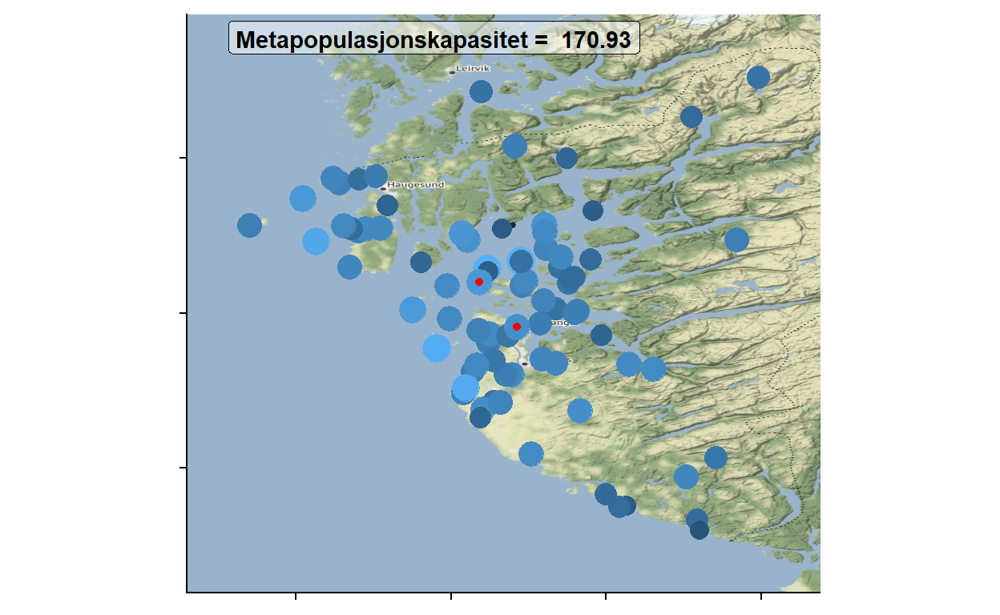

Vi er alle sammen individer i lag.
I en metapopulasjon så betyr det noe hvor bestandene er. Og hvilke som ligger hvor - ikke alle bestander er skapt like.
I en tidligere post om metapopulasjoner skrev vi om hvordan konnektivitet (\(S_{i}\)) i en metapopulasjon kan “enkelt” skildres basert på avstanden mellom delområdene (\(d_{ij}\)) og størrelsen av delområdene (\(A_{i}A_{j}\)). Større konnektivitet er ofte assosiert med høyere sannsynlighet for tilstedeværelse av en bestand (Ranius et al. (2014)). Endringene i andelen bebodde område (eller bestander), \(p\), kan beskrives med utvekslingene mellom områdene \(i\) og \(j\): \(m_{ij} = e^{-\alpha d_{ij}}A_{i}A_{j}\).
Man kan beskrive bevegelsen mellom alle områdene (dvs. for hele metapopulasjonen) med en kvadratisk matrise M hvor lengden (og bredden) er lik antall områder og fyller den med verdiene \(m_{ij}\). For denne matrisen så finner vi eigenverdien \(\lambda_{M}\). \(\lambda_{M}\) kalles også for metapopulasjonens kapasitet. Eigenverdien tilsvarer andel bebodde områder (\(h\) i modellene til Levins (1969), Levin (1970); også tilsvarende \(p\) i likning 3 her).
Parametrene som inngår i lambda M er teoretisk knyttet til bestandens overlevelse. Når \(\lambda_{M}>E/C\) så vil bestanden være levedyktig i det lange løp. \(C\) - koloniseringsrate (hvor mange individ som forlater et områder i retning av alle andre områder). Noe som også er bekreftet eksperimentelt (Molofsky and Ferdy (2005), Govindan et al. (2015)) og i felt (Bulman et al. (2007)).
Metapopulasjonskapasitet samsvarer i stor grad med rødlistevurderingene (Schnell et al. (2013a), Schnell et al. (2013b), Huang, Pimm, and Giri (2020)). IUCN har laget rammeverket for rødlistevurderingene som brukes både nasjonalt og internasjonalt. I dette rammeverket så blir bestander som er fordelt over flere små områder (‘several small’) vurdert til å være i en mer kritisk tilstand enn bestander som er samlet i færre større områder (‘single large’).
En av antagelsen ved modellen over er at spredning øker med arealet til bestanden. Dette medfører blant annet at en økning av arealet til en bestand sitt område øker metapopulasjonskapasiteten. Altså et stort område er bedre enn mange små. Men det er ikke alltid tilfelle at spredning øker med arealet (Wang and Altermatt (2019)). Hos noen arter, slik som gresshoppen vortebiter kan antallet som sprer seg bli mindre med økende områdestørrelse. Hos slike arter anbefales at man forsøker å ivareta mange små habitat.
Slike forhold, og antagelsene om positive forhold mellom areal og immigrasjon og uttryddelsesrate kan bakes inn i forholdene gitt over (Ovaskainen (2002)), ved at økende areal kan ha en negativ eller positiv effekt på \(m_i{ij}\) ved å justere eksponenten \(\theta\).
\(m_{ij} = e^{-\alpha d_{ij}}A_{i}^{\theta_{ex}+\theta_{im}}A_{j}^{\theta_{em}}\).
Men til å begynne med så forholder vi oss til det enkle (og forsåvidt mest utbredte) scenarioet om at økende areal av område øker spredning, øker overlevelse og immigrasjon. Vi simulerer først en rekke bestander basert på forholdene gitt i tidligere innlegg om metapopulasjoner.
library(data.table)
library(ggplot2);library(cowplot);library(scales);library(gridExtra)
nSimulations = 50
ParameterSpace = expand.grid(nIterations = 1:nSimulations,
#RangeØyer = seq(40,60,length.out = 1),
RangeStartProp = seq(.35,.6,length.out = 1),
RangeLandskap = seq(3.4,3.7,length.out = 1),
RangeKonstantC = seq(.24,.75,length.out = 1),# .23->.24
RangeKonstantE = seq(60,100,length.out = 1),# 325->320
eNoise = seq(0,0,length.out = 1))
setorder(ParameterSpace, nIterations)
ParameterSpace$SnittPrevalens = NA
ParameterSpace$SdPrevalens = NA
ParameterSpace$MinPrevalens = NA
ParameterSpace$AndelUtvikling = NA
iteration = 0
# lengde på tidsserie
tmax = 100
RangeØyer = 40
nØyer = RangeØyer # ParameterSpace$RangeØyer[i] #i
TidsArray = array(rep(0, tmax*nØyer),
dim = c(tmax, nØyer, nrow(ParameterSpace)))
TidsserieKoloniseringsrater = array(rep(0, tmax*nØyer),
dim = c(tmax,
nØyer,
nrow(ParameterSpace)))
GeografiArray = array(rep(NA, 3*nØyer),
dim = c(3, nØyer, nrow(ParameterSpace)))
for(i in 1:nrow(ParameterSpace)){
#print(paste(i , "av", nrow(ParameterSpace)))
# Antall øyer/habitat i systemet
iteration <- ParameterSpace$nIterations[i]
AntallBebodd = ParameterSpace$RangeStartProp[i]*nØyer #i
set.seed(iteration) # slik at ulike miljøstøy-nivå vil testes på de samme øy-konfigurasjonene
Bebodd = sample(1:nØyer,AntallBebodd)
Tilstede = rep(0, nØyer)
Tilstede[Bebodd]<-1
TidsserieTilstede = matrix(rep(rep(NA, nØyer), tmax), ncol = nØyer)
TidsserieTilstede[1,]<-Tilstede
TidsArray[1,,iteration]<-Tilstede
TidsserieKoloniseringsrater[1,,iteration]<-Tilstede
# tilfeldig plassering av øyene
ArenaStørrelse = ParameterSpace$RangeLandskap[i]
set.seed(iteration) # slik at ulike miljøstøy-nivå vil testes på de samme øy-konfigurasjonene
xPos = runif(n = nØyer, min = 0, max = ArenaStørrelse)
set.seed(-iteration) # slik at ulike miljøstøy-nivå vil testes på de samme øy-konfigurasjonene
yPos = runif(n = nØyer, min = 0, max = ArenaStørrelse)
# Tilfeldig størrelse
set.seed(iteration) # slik at ulike miljøstøy-nivå vil testes på de samme øy-konfigurasjonene
ØyStr = rlnorm(n = nØyer, meanlog = .1, sdlog = .2) #Ai
GeografiArray[,,i]<-rbind(ØyStr, xPos, yPos)
# Regn ut mellom-øy avstand
MellomØyAvstand = dist(cbind(xPos, yPos), diag = T, upper = T) # dij
Alpha = -1#1/mean(MellomØyAvstand)
# Konstanter
c_konstant = ParameterSpace$RangeKonstantC[i]
e_konstant = ParameterSpace$RangeKonstantE[i]
eNoise = ParameterSpace$eNoise[i]
# Utryddelsesrater er konstant over tid
UtryddelsesRateØy_i = e_konstant/ØyStr
# fra Hanski, Ilkka, et al. "The quantitative incidence function model and persistence of an endangered butterfly metapopulation." Conservation Biology 10.2 (1996): 578-590.
# ØystrEffekt = 0.952
# muTick = 0.158
# AjAi = sapply(ØyStr, function(x) x*ØyStr)
# mij = exp(-Alpha*as.matrix(MellomØyAvstand))*AjAi # number of immigrants
# Tidssteg
t = 2
NoiseE = rnorm(n = tmax, sd = eNoise)
while(t<tmax){
KoloniseringsRateØy_i = sapply(1:nØyer, function(i){
Aj = ØyStr[-i]
Aj = Aj + NoiseE[t]
c_konstant*sum(Tilstede[-i]*Aj*
exp(-Alpha*as.matrix(MellomØyAvstand)[-i,i]))}) # Si
TidsserieKoloniseringsrater[t,,i]<-KoloniseringsRateØy_i
# Sannsynligheten for bebodd øy
Pi = KoloniseringsRateØy_i/(KoloniseringsRateØy_i + UtryddelsesRateØy_i) # Også kjent som Ji
Pi = ifelse(Pi>1,1,ifelse(Pi<0,0,Pi))
Kolonisert = sapply(Pi, function(x) sample(0:1, 1, prob = c(1-x,x)))
# Oppdater bebodd-status
Tilstede<-Kolonisert
TidsserieTilstede[t,]<-Tilstede
TidsArray[t,,i]<-Tilstede
# Oppdater tidssteg
t = t+1
}
ParameterSpace$SnittPrevalens[i] = median(rowMeans(TidsserieTilstede), na.rm = T)
ParameterSpace$SdPrevalens[i] = sd(rowMeans(TidsserieTilstede), na.rm = T)
ParameterSpace$MinPrevalens[i] = min(rowMeans(TidsserieTilstede), na.rm = T)
ParameterSpace$AndelUtvikling[i] = coef(lm(rowMeans(TidsserieTilstede)~I(1:length(rowMeans(TidsserieTilstede)))))[2]
if(i==nrow(ParameterSpace)){
saveRDS(list(ParameterSpace = ParameterSpace,
Geografi = GeografiArray,
TidsArray = TidsArray,
TidsserieKoloniseringsrater = TidsserieKoloniseringsrater),
"ParameterSpace_MetaPopStoch.rds")
}
}
p1 = ggplot(data = ParameterSpace, aes(y = MinPrevalens, x = eNoise, group = factor(eNoise)))+geom_boxplot()+theme_cowplot()+
theme(axis.title.x = element_blank(),
axis.text.x = element_blank())+
ylab("Andel \n (minimum)")
p2 = ggplot(data = ParameterSpace,
aes(y = SnittPrevalens,
x = eNoise, group = factor(eNoise)))+
geom_boxplot()+theme_cowplot()+
theme(axis.title.x = element_blank(),
axis.text.x = element_blank())+
ylab("Andel \n (gj.snitt)")
p3 = ggplot(data = ParameterSpace,
aes(y = AndelUtvikling*200, x = eNoise,
group = factor(eNoise)))+
geom_hline(yintercept = 0, linetype="dashed")+theme_cowplot()+
geom_boxplot()+
ylab("Andelsvekst\n per år x 200") +
xlab("Miljøstokastisitet")#+
#scale_y_continuous(breaks = seq(-.2,.2,.1))+coord_cartesian(ylim = c(-0.1,0.1))
Geografi = GeografiArray#aa$Geografi
TidsArray = TidsArray#aa$TidsArray
TidsserieKoloniseringsrater = TidsserieKoloniseringsrater#aa$TidsserieKoloniseringsrater
#### Centrality ####
# Eigenvector centrality er et mål på hvor mange noder som peker til deg.
# Per parametersetting
Centrality = lapply(1:dim(Geografi)[3], function(x){
# Per landskap
dij = as.matrix(dist(cbind(Geografi[2,,x], Geografi[3,,x]), diag = T, upper = T))
Centrality = sapply(1:nrow(dij), function(i){
js = sapply(1:ncol(dij), function(j){
exp(dij[i,j])*Geografi[1,i,x]*Geografi[1,j,x]
})
js
})
diag(Centrality)<-0 # set i = j <- 0
Eigens = eigen(Centrality)
EVec = Eigens$vectors[,1]^2
EVec = EVec/sum(EVec)
list(Eigenvector = EVec,
EigenValue = Eigens$value[1])
})
ParameterSpace$EigenvalueCentrality<-sapply(Centrality, function(x) x$EigenValue)
## Connectivity ####
Alpha = 1/1 # Alpha beskriver overlevelse for spredningen, dvs. 1/gjennomsnittlig spredningsdistanse
# Per parametersetting
Connectivity = lapply(1:dim(Geografi)[3], function(x){
# Per landskap
dij = as.matrix(dist(cbind(Geografi[2,,x], Geografi[3,,x]), diag = T, upper = T))
# Geographic aspect
Geo = exp(-Alpha*dij)*Geografi[1,,x]*dij # ganger en siste med dij for å ignorer i = j, dvs. avstand med seg selv
# Per tidssteg
Si_per_t = t(sapply(1:nrow(TidsArray), function(Tt){
# per øy
Si = sapply(1:ncol(TidsArray), function(xx){
Si_x = sum(Alpha*TidsArray[Tt,,x]*Geo[xx,])
})
Si
}))
})
Connectivities = sapply(Connectivity, function(x){
colMeans(x)
})
### Eksempel
df = as.data.frame(t(Geografi[,,1]))
names(df)<- c("Areal", "xPos", "yPos")
#df$Connectivity = colMeans(t(Connectivities))
df$Connectivity = t(Connectivities)[1,]
df$EigenCentrality = Centrality[[1]]$Eigenvector^2*Centrality[[1]]$EigenValue
ParameterSpace = as.data.table(ParameterSpace)
ParameterSpace[,AverageConnectivity:=colMeans(Connectivities)]# Øyer som har bedre tilknytning har bedre vekst
ggplot(data = ParameterSpace,
mapping = aes(x = (EigenvalueCentrality),
y = AndelUtvikling))+
geom_point()+
geom_smooth(method = "lm", se=FALSE)+
xlab("Metapopulasjonkapasitet")+
ylab("Vekst i andel\n bebodde områder") +
coord_cartesian(ylim = quantile(ParameterSpace$AndelUtvikling,c(.1,.9))) Figure 1: Gjennomsnittlig vekst i andel bebodde områder med økende metapopulasjonskapasitet. Linjen viser en lineær regresjon.
ggplot(data = ParameterSpace,
mapping = aes(x = (EigenvalueCentrality),
y = SnittPrevalens))+
geom_point()+
geom_smooth(method = "glm",
method.args = list(family = "binomial"),
se = FALSE)+
xlab("Metapopulasjonkapasitet")+
ylab("Andel bebodde områder \n (gj.snitt)")+
coord_cartesian(ylim = quantile(ParameterSpace$SnittPrevalens
,c(.1,.9))) Figure 2: Gjennomsnittlig andel bebodde områder med økende metapopulasjonskapasitet. Linjen viser en logistisk regresjon.
La oss nå se på et mer konkret eksempel.
Noen ganger har man mulighet til å utvide området man legger ned innsats i; ved å utvide skjøtselen til nye områder, ved å etablere nye verneområder mm.
Vi kan ta utgangspunkt i dagens verneområder i Rogaland fylke. Her er det meldt at fire nye områder kan være aktuelle for vern.
Blant disse, av Klostervågen og Mosvatnet: hvilket område burde man velge?
Med metodikken over så kan vi første ta dagens situasjon med alle verneområder; hvor de ligger og hvor store de er. Man ender da opp med en metapopulasjonskapasitet \(\lambda_{M}\) = 169.92, og ja legger man til både Klostervåen og Mosvatnet så blir dette best. Men, om man bare må velge et så kan det synes som at Klostervågen (\(\lambda_{M}\) = 170.74) slår Mosvatnet (\(\lambda_{M}\) = 170.12) såvidt. Eller, enhetene her er jo vanskelig å oversette uten mer kontekst. Så for alt vi vet så kan dette være en ganske stor forskjell.
library(data.table)
library(sf)
library(ggmap)
library(mapproj)
library(cowplot)
library(gridExtra)
th = theme_cowplot()+
theme(axis.text=element_blank(),axis.title=element_blank(), legend.position = "none")
library(sp)
VO = fread("Verneomraader_centroider.csv")
#VO = VO[-1,]
#Mosvatnet
#531039,61; N: 6539879 Ø: 310963
# Klostervågen
#847287,21; N: 6556056 Ø: 304732
# Hettemåke foraging flight 4.6-11.8 km flight range # https://onlinelibrary.wiley.com/doi/full/10.1002/ece3.6291
# sildemåke 30.9 #https://www.researchgate.net/publication/306119852_Terrestrial_and_Marine_Foraging_Strategies_of_an_Opportunistic_Seabird_Species_Breeding_in_the_Wadden_Sea/link/57b2ef8508aeaf239baefb27/download
Geografi = VOgeo = as.matrix(VO[,c("Areal", "PosX", "PosY")])
VOgeo1 = rbind(VOgeo, c(847287.21, 304732, 6556056)) # Klostervågen
VOgeo2 = rbind(VOgeo, c(531039.61, 310963, 6539879)) # Mosvatnet
VOgeo3 = rbind(VOgeo2, c(847287.21, 304732, 6556056)) # Begge to
Centrality = function(Geografi, DispersalDistance = 30.9, Alpha = NULL, unit = "m"){
# Geografi = dataramme med areal, x og y koordinate
Areal = Geografi[,1]
if(unit=="m"){
Areal = Areal/1000000
}
dij = as.matrix(dist(cbind(Geografi[,2], Geografi[,3]), diag = T, upper = T))
if(unit == "m"){
dij = dij/1000# transform from meter to kilometer
}
Alpha = 1/DispersalDistance
Si = sapply(1:nrow(Geografi), function(i){
Geo = sum(exp(-Alpha*dij[i,-i])*Geografi[-i,1])
})
M = sapply(seq_along(Areal), function(i){
sapply(seq_along(Areal), function(j){
exp(-Alpha*dij[i,j])*Areal[i]*Areal[j]
})
})
diag(M)<-0
ev = eigen(M)$vectors[,1]^2
ev = ev/(sum(ev))
we = ev*eigen(M)$value[1]
list(Centrality = Si,
EigenValue = eigen(M)$value[1],
Eigenvectors = we)
}
Measures = Centrality(Geografi = VOgeo)
Plotting = function(Geografi = VOgeo3, AntallNye = 0){
InputData = as.data.frame(Geografi)
pp = st_as_sf(SpatialPoints(coords = InputData[,2:3]))
st_crs(pp)<-32632
bb = st_bbox(pp)
pp2 = st_transform(pp, 4326)
VOs = data.frame(st_coordinates(st_transform(pp, 4326)))
names(VOs)<-c("PosX", "PosY")
VOs$EV = log(Centrality(Geografi = InputData)$Eigenvectors)
## Plot kartet
aaa = get_map(c(left = min(VOs[,1])-.2,
right = max(VOs[,1])+.2,
bottom = min(VOs[,2])-.2,
top = max(VOs[,2])+.2))
Labs = data.frame(Y = max(VOs$PosY),#as.numeric(attr(aaa, "bb")[3]),
X = min(VOs$PosX),#as.numeric(attr(aaa, "bb")[2]),
MC = paste("Metapopulasjonskapasitet = ",
round(Centrality(Geografi =
InputData)$EigenValue,2)))
ggmap(aaa)+
xlab("Lengdegrad")+ ylab("Breddegrad")+theme_cowplot()+
geom_point(data= VOs,
mapping = aes(x = PosX, y = PosY,
size = EV, col = EV))+
geom_point(data = as.data.frame(tail(VOs,AntallNye)),
mapping = aes(x = PosX, y = PosY), col = "red")+
geom_label(data = Labs,
mapping = aes(y = Y, x = X,
label = MC),
fontface = "bold", fill = alpha("white",0.5),
hjust = 0.05, vjust = -.7)+
th
}
#grid.arrange(
Plotting(VOgeo)+coord_fixed()#, Plotting(VOgeo1,
AntallNye = 1)+coord_fixed()#, Plotting(VOgeo2,
AntallNye = 1)+coord_fixed()#, Plotting(VOgeo3,
AntallNye = 2)+coord_fixed()#, ncol = 4, nrow = 1)
Det kan gi mening at Klostervågen er vurdert til bedre. Den økter “tettheten” av verneområder i et område med lavere tetthet enn omgivelsen til Mosvatnet. Men merk. Her så pøser vi jo inn bare areal på verneområdene. Hvor enunderliggende antagelse er at større område betyr bedre kvalitet. Areal er uten tvil viktig for kvaliteten til det enkelte området, men sammensetningen til området - hvilke naturtyper den består av - er også svært viktig (jf. nisje-konseptet). Og fullstendig ignorert her.
Om man nå har en rekke delområder som man skal skjøtte eller forvalte på noe vis, hvor skal man legge ned innsats?
Eigenverdien, \(\lambda_{M}\), til metapopulasjonen har en assosiert høyre eigenvektor. Denne har likt antall verdier (\(x\)) som antall bestander i systemet, og kan brukes til å beskrive den enkelte bestanden sin betydning for metapopulasjonen sin kapasitet. Hvor hvert tall i eigenvektoren (\(x_{i}\), heretter kallt \(EV\)) kvadrert og multiplisert med \(\lambda_{M}\) vil gi dette målet; \(\lambda_{i} = \lambda_{M}EV^2\). Eigenvektoren til \(M\)-matrisen er blitt brukt for å identifisere viktige områder for bevaring av fugler i den atlantiske regnskogen (Huang, Pimm, and Giri (2020)).
I populasjonsøkologi tilsvarer vektoren den stabile aldersfordelingen om \(M\)-matrisen var Leslie-matrisen til en bestand. Og kan tolkes likedan; over tid så vil verdiene i eigenvektorene reflektere hvor det befinner seg flest individer i bestanden. Og hvor man i populasjonsøkologi vil regne ut sensitivitet/elastisitet for å beregne hvilken parameter i Leslie-matrisen (f.eks. overlevelse eller fekunditet til en gitt aldersklasse) som er viktigst for bestandsveksten, så blir dette overflødig for \(M\)-matrisen da den er symmetrisk. Dette betyr også at sensitivitet/elastisitet samsvarer med \(EV\). Kan også se til denne studien for beregning av sensitivitet/elastisitet.
Dragehode er en truet art, som er vertsplante for den enda mer truede dragehodeglansbillen.
For disse artene så brukes det mye tid og penger på tiltak. Metapopulasjonsteori kan være en tilnærming på hvordan man skal prioritere hvor man bør gjøre tiltakene.
Vi henter data fra GBIF (Artskart) for disse to artene. Og antar at dragehodeglansbille har en gjennomsnittlig spredningsdistanse på ca. 1500 meter. Vi kjører først en algoritme som grupperer forekomstene slik at de som er innenfor 1500 m fra hverandre blir gruppert sammen og utgjør en “bestand.” Slik at bevelse innenfor denne avstanden er “normal” bevegelse, mens bevegelse utover dette er “spredning.”
#install.packages("rgbif")
library(rgbif)
#library(scrubr)
library(maps)
library(data.table)
library(sp)
library(raster)
library(ggplot2)
library(cowplot)
library(adehabitatHR)
myspecies <- c("Meligethes norvegicus","Dracocephalum ruyschiana")
if(!file.exists("C:/Users/endre/OneDrive/Tekster/egodrive.github.io/_posts/2022-10-01-metapopulasjoner-del-2/gbif_data.csv")){
gbif_data <- occ_data(scientificName = myspecies,
hasCoordinate = TRUE,
country = "NO",
limit = 20000)
Host = data.table( gbif_data$`Dracocephalum ruyschiana`$data)
Beetle = data.table(gbif_data$`Meligethes norvegicus`$data)
Joint = rbind(Beetle, Host, fill = T)
Joint$networkKeys<-NULL
fwrite(Joint,"C:/Users/endre/OneDrive/Tekster/egodrive.github.io/_posts/2022-10-01-metapopulasjoner-del-2/gbif_data.csv")
}
Joint = fread("C:/Users/endre/OneDrive/Tekster/egodrive.github.io/_posts/2022-10-01-metapopulasjoner-del-2/gbif_data.csv")
Joint = Joint[decimalLatitude>58.5 & decimalLatitude<62]
Joint = cbind(data.table(coordinates(spTransform(
SpatialPoints(coords = Joint[,c("decimalLongitude", "decimalLatitude")],
proj4string = CRS("+init=epsg:4326")),
CRS("+init=epsg:32632"))))
, Joint)
names(Joint)[1:2]<-c("UTMx", "UTMy")
DispDistanceM = 1500
# Create clusters, aka. populations
ssp = Joint[,c(1:2)]
chc <- hclust(dist(ssp), method="complete")
# Distance with a 1500 threshold
chc.d <- cutree(chc, h=DispDistanceM)
Joint[,Populasjon:=chc.d]
# Lage et grid (kan brukes til å definere populasjon)
#Joint[,c("gridY", "gridX"):=list(cut(UTMy, seq(from = min(Joint$UTMy, na.rm = T),
# to = max(Joint$UTMy, na.rm = T),
# by = DispDistanceM)),
# cut(UTMx, seq(from = min(Joint$UTMx, na.rm = T),
# to = min(Joint$UTMx, na.rm = T),
# by = DispDistanceM)))]
# Finne sentrum hvor hver populasjon
Joint[,c("centrY", "centrX"):=list(mean(UTMy, na.rm = T),
mean(UTMx, na.rm = T)),
c("Populasjon")]
Joint[,Areal:={try(mcp(SpatialPoints(.SD[,c("UTMx", "UTMy")]), percent = 100)$area,
silent = T)},
"Populasjon"]
Joint[,Areal:=ifelse(is.na(Areal)|Areal==0,min(Joint$Areal, na.rm = T),Areal)]
Joint[,nHost := (max(.SD[species=="Dracocephalum ruyschiana"]$individualCount,
na.rm = T)),
c("Populasjon")]
Joint[, nHost:=ifelse(is.na(nHost),.1,nHost)]
Joint[,BeetlePresent:=uniqueN(species)-1, c("Populasjon")]
#Joint[,BeetlePresent:=ifelse(BeetlePresent==1,"Ja","Nei")]
if("metapop" %in% installed.packages()[,1]){
library(metapop)
}else{install.packages("metapop", repos = c("http://R-Forge.R-project.org",
"http://your.nearest.CRAN.mirror.org"), dep = TRUE)
}
d = dist(Joint[centrY>0,.SD[1], c("Populasjon")][,c("centrX", "centrY")])
Ar = as.numeric(Joint[centrY>0,.SD[1], c("Populasjon")]$Areal)
iD = 1/DispDistanceMlibrary(data.table);library(scales)
library(cowplot);library(metapop)
library(ggplot2)
metacapa_2 = function(d, A, alpha = 1, ...){
M<- as.matrix(exp(-alpha*d))
diag(M)<- 0
M<-M * outer(A, A)
tmp <- eigen(M)
#tmp2 <- eigen(t(M))
ev <- tmp$values[1]
eij = (M/ev)*((tmp$vectors[, 1]*tmp$vectors[, 1])/(tmp$vectors%*%tmp$vectors))
cap <- list(capacity = ev, x = tmp$vectors[, 1]^2, d = d,
A = A,
M = M)
class(cap) <- "metacapa"
cap
}
sol <- metacapa_2(d, Ar,
alpha = iD)
Joint = cbind(Joint[centrY>0,.SD[1], c("Populasjon")][,c("Populasjon")],EV = sol$x
)[Joint, on = "Populasjon"]
p = ggplot(data = Joint[Areal>4 & nHost >0.1],
aes( y = (nHost), x = (Areal)))+
geom_point(mapping = aes(col = factor(BeetlePresent), size = EV))+
theme_cowplot()+
geom_smooth(method = "glm",
method.args = list(family = "poisson"),
se = FALSE)+
scale_color_discrete(name="Dragehodeglansbille\ntilstede")+
xlab("Areal (ha)") + ylab("Dragehode (antall)")+
theme(legend.position="bottom")
p +
scale_x_continuous(breaks= log_breaks(),trans = scales::log_trans())+
scale_y_continuous(breaks= log_breaks(),trans = scales::log_trans())Figure 3: Forholdet mellom antall dragehode i en bestand og areal på bestanden, hvor punktstørrelsen reflekterer EV (verdien bestanden har for metapopulasjonen av dragehode) og fargen om det er en bille tilstede eller ikke. Linjen viser en poisson-regresjon.
df = Joint[Areal>4 & nHost >0.1][,.SD[1], "Populasjon"]Man kan også se på \(EV\) som en forklaring på om dragehodeglansbille er tilstede. Jo mer robust del av vertsbestanden man er i, jo mer sannsynlig vil det være å finne dragehodeglansbille. Det er forsåvidt en statistisk signifikant forhold, men merk: her har vi ikke gått dataene nærmere etter i sømene. Så dette “forholdet” må man ta med god klype salt (det er så mange bestander med, og det utvalget vi har er kanskje ikke samlet inn “godt nok”).
library(cowplot)
library(ggplot2)
ggplot(data = df, aes(y = BeetlePresent, x = EV))+
geom_point()+
geom_smooth(method = "glm",
method.args = list(family = "binomial"),
se = FALSE)+
ylab("Bille tilstede")Figure 4: Forholdet mellom hvorvidt dragehodeglansbille er tilstede og delområdet sin EV (rolle i metapopulasjonen) av dragehode.
knitr::opts_chunk$set(echo = FALSE)
library(leaflet)
library(leaflegend)
library( crosstalk )
library( dplyr )
df = Joint[,.(lat = mean(decimalLatitude, na.rm = T),
long = mean(decimalLongitude, na.rm = T),
BeetlePresent = unique(BeetlePresent),
mag = mean(EV, na.rm = T)),
c("Populasjon")]
df = df[df$lat>0 & df$long>0,]
#df$mag <- (df$mag-min(df$mag, na.rm = T))/(max(df$mag, na.rm = T)-min(df$mag,na.rm = T))
df$mag<-ecdf(df$mag)(df$mag)
# symbols <- makeSymbolsSize(
# values = df$mag,
# shape = 'diamond',
# #color = 'red',
# color = ~pal(df$mag2),
# #fillColor = 'red',
# opacity = .5,
# baseSize = 10
# )
# If you want to use predefined palettes in the RColorBrewer package:
# Call RColorBrewer::display.brewer.all() to see all possible palettes
pal <- colorNumeric(
palette = 'YlOrRd',
domain = df$mag2
)
df$mag2 = df$mag
shared_data <- SharedData$new(df)
filter_slider("mag", "Metpop-verdi", shared_data, ~mag2, width = "100%")leaflet(shared_data) %>%
addTiles() %>%
addCircleMarkers(#lng = ~lng, lat = ~lat
, weight = 1
#, shape = 'diamond'
#, opacity = 0.1
, stroke = T
#, size = 10
#, radius = ~size
, popup = paste0(round(df$mag,2)*100,"-persentil")
, color = ~pal(mag2)
, fillColor = ~pal(mag2)
#, clusterOptions = markerClusterOptions()
)En (av kanskje flere) ting som ikke er nevnt i angående metapopulasjoner så langt. Bestandsdynamikk i den enkelte bestand.